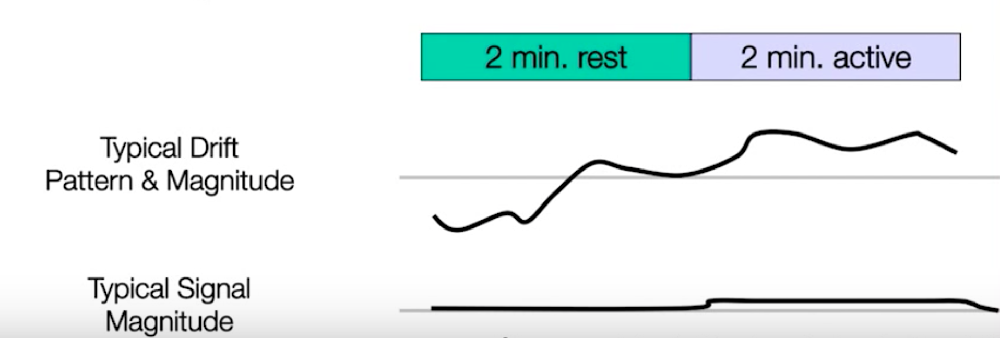

Video
Questions
Drift

Q. Why is it not possible to detect the signal in this example?
A. Because the drift noise is much louder than the original signal.
Aliasing

Q. Given a TR of 2000ms, is it possible to avoid aliasing when sampling from the HRF shown above? Why or why not?
A. As long as the highest frequency is higher than 1Hz, it is possible to avoid aliasing.
Q. What could possibly be the largest TR while avoiding aliasing? Why?
A. The largest TR to avoid aliasing the 1/(1/2 * highest frequency). Because signals faster than 1/2 the highest frequency will be aliased.
Noise Map
Q. If the noise were uniform across the entire brain, what would the spatial map look like instead?
A. It will look like the a circle of the brain.
Q. If noise were higher closer to the center of the brain, what would the spatial map look like instead?
A. The center of the brain will be highlighted from the background.